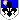

Elanoer Vahn - locanda le tre spade
15:30 Vahn
Vahn  [tavolo] ….ed è così che alla fine ho scelto di fare i peperoni ripieni, invece che l'arrosto. [seduto ad un tavolo con Elanoer, dopo un pasto condiviso assieme, ha finito ora di raccontarle per filo e per segno la cena che il bardo preparò giorni fa per Adema e per tutti i cadetti dell’Accademia. Le ha raccontato dei prodotti locali del ducato, qualche piccolo aneddoto su come il Duca era vestito, chiacchiere leggere ma che hanno in qualche modo fornito una prima luminosa finestra sul carattere del giovane elfo. Ha un aspetto scarmigliato ma pulito. Indossa una camicia di lino chiara, le maniche arrotolate fino ai gomiti e il colletto semi aperto, una cintura spessa di cuoio a cui é agganciato un pugnale e un astuccio di pergamene, delle braghe color terra comode, da viaggio infilate dentro degli stivali scuri consunti. Il viso giovane non è cambiato, a parte gli innumerevoli ferri da marinaio che gli adornano le orecchie a punta. Le sorride ora]…sono contento che riusciamo finalmente a passare un pasto assieme, con tutto quello che è successo il tempo è volato via. [la osserva, allegro]…come ti trovi in Accademia?
[tavolo] ….ed è così che alla fine ho scelto di fare i peperoni ripieni, invece che l'arrosto. [seduto ad un tavolo con Elanoer, dopo un pasto condiviso assieme, ha finito ora di raccontarle per filo e per segno la cena che il bardo preparò giorni fa per Adema e per tutti i cadetti dell’Accademia. Le ha raccontato dei prodotti locali del ducato, qualche piccolo aneddoto su come il Duca era vestito, chiacchiere leggere ma che hanno in qualche modo fornito una prima luminosa finestra sul carattere del giovane elfo. Ha un aspetto scarmigliato ma pulito. Indossa una camicia di lino chiara, le maniche arrotolate fino ai gomiti e il colletto semi aperto, una cintura spessa di cuoio a cui é agganciato un pugnale e un astuccio di pergamene, delle braghe color terra comode, da viaggio infilate dentro degli stivali scuri consunti. Il viso giovane non è cambiato, a parte gli innumerevoli ferri da marinaio che gli adornano le orecchie a punta. Le sorride ora]…sono contento che riusciamo finalmente a passare un pasto assieme, con tutto quello che è successo il tempo è volato via. [la osserva, allegro]…come ti trovi in Accademia?
Vahn [tavolo] ….ed è così che alla fine ho scelto di fare i peperoni ripieni, invece che l'arrosto. [seduto ad un tavolo con Elanoer, dopo un pasto condiviso assieme, ha finito ora di raccontarle per filo e per segno la cena che il bardo preparò giorni fa per Adema e per tutti i cadetti dell’Accademia. Le ha raccontato dei prodotti locali del ducato, qualche piccolo aneddoto su come il Duca era vestito, chiacchiere leggere ma che hanno in qualche modo fornito una prima luminosa finestra sul carattere del giovane elfo. Ha un aspetto scarmigliato ma pulito. Indossa una camicia di lino chiara, le maniche arrotolate fino ai gomiti e il colletto semi aperto, una cintura spessa di cuoio a cui é agganciato un pugnale e un astuccio di pergamene, delle braghe color terra comode, da viaggio infilate dentro degli stivali scuri consunti. Il viso giovane non è cambiato, a parte gli innumerevoli ferri da marinaio che gli adornano le orecchie a punta. Le sorride ora]…sono contento che riusciamo finalmente a passare un pasto assieme, con tutto quello che è successo il tempo è volato via. [la osserva, allegro]…come ti trovi in Accademia?15:37 Elanoer
Elanoer
Elanoer 
[Tavolo] [Seduta comodamente davanti all'elfo, ascolta il suo racconto con attenzione, con un sorriso eloquente e piacevole sul viso, di chi si trova a proprio agio. Indossa una camicia bianca, parabraccia di cuoio, pettorale dello stesso materiale con il simbolo del giglio, blu. Calzoni neri sulle gambe, schinieri e scarpe, entrambe di cuoio, per completare l'armatura leggera. Non è armata, non ha gioielli. Lunghi capelli corvini scendono sulle spalle mentre gli occhi dalla duplice cromia (dx blu, sx verde chiaro) sono sul suo interlocutore. Mano destra che tiene un calice di vino a metà.] Vero. Ne è passato di tempo, eppure mi ricordavo bene di te. [Ammette con semplicità.] Mi trovo bene, grazie. Come procedono i lavori alla Cueva invece? [Chiede.]15:45Vahn [tavolo] [le sorride di un sorriso terso, quando lei condivide il suo ricordo. Anche lui ha in mano un bicchiere mezzo pieno di vino, che sta centellinando da un po']...i lavori alla Cueva procedono, ma servirà ancora del tempo. Ho investito personalmente del denaro perchè vorremmo diventasse una base condivisa con gli Elemosinieri. [le spiega apertamente]...gestirla assieme, dividerci i guadagni. Ma ragionando con Adema e Keleldur...siamo arrivati alla conclusione che quella potrebbe non essere una base sicura per gli affari degli Andalottiani...[muove una mano nell'aria, mentre parla, gesticolando con una sua grazia congenita]...sai, tutte quelle stoffe, la merce...[scuote il capo]...troppo rischioso per un posto che sarà frequentato da pirati e compagnia cantante. [beve un sorsetto di vino.]...vorremmo proporre loro di prendere uno spazio dentro le mura, magari quando sarà completato il quartiere commerciale. Vedremo. [la osserva da sopra il bicchiere, in un momento di silenzio]...sai, perdere così la propria casa è una cosa che capisco...penso sia anche questo il motivo per cui ci siamo avvicinati così fortemente con Syl, Ade e gli altri...[nel tono ora una nota malinconica, molto empatica]
Vahn [tavolo] [le sorride di un sorriso terso, quando lei condivide il suo ricordo. Anche lui ha in mano un bicchiere mezzo pieno di vino, che sta centellinando da un po']...i lavori alla Cueva procedono, ma servirà ancora del tempo. Ho investito personalmente del denaro perchè vorremmo diventasse una base condivisa con gli Elemosinieri. [le spiega apertamente]...gestirla assieme, dividerci i guadagni. Ma ragionando con Adema e Keleldur...siamo arrivati alla conclusione che quella potrebbe non essere una base sicura per gli affari degli Andalottiani...[muove una mano nell'aria, mentre parla, gesticolando con una sua grazia congenita]...sai, tutte quelle stoffe, la merce...[scuote il capo]...troppo rischioso per un posto che sarà frequentato da pirati e compagnia cantante. [beve un sorsetto di vino.]...vorremmo proporre loro di prendere uno spazio dentro le mura, magari quando sarà completato il quartiere commerciale. Vedremo. [la osserva da sopra il bicchiere, in un momento di silenzio]...sai, perdere così la propria casa è una cosa che capisco...penso sia anche questo il motivo per cui ci siamo avvicinati così fortemente con Syl, Ade e gli altri...[nel tono ora una nota malinconica, molto empatica]15:51Elanoer [Tavolo] [Inarca appena le sopracciglia a quella affermazione sugli Elemosinieri e la base, sorpresa, poi allarga il sorriso. Non lo interrompe tuttavia, lasciandolo continuare con la sua spiegazione.] Era decisamente una bella idea ed un posto comodo per lo smercio. ..Ma capisco anche che sistemare oggetti di valore in un posto frequentato per la maggior parte, da pirati, non è una buona idea. [Da il proprio parere a sua volta.] Lo spero. Sembrano trovarsi benissimo qui a Ghileas, con voi. Con l'accoglienza che date. Non è una cosa da tutti. [La sua ultima frase ne smorza appena il sorriso.] Penso di poterlo comprendere. [Ammette, traendo un sorso di vino rosso dal calice. Non si esprime oltre, donandogli solo un sorriso rassicurante, empatica a sua volta.]
Elanoer [Tavolo] [Inarca appena le sopracciglia a quella affermazione sugli Elemosinieri e la base, sorpresa, poi allarga il sorriso. Non lo interrompe tuttavia, lasciandolo continuare con la sua spiegazione.] Era decisamente una bella idea ed un posto comodo per lo smercio. ..Ma capisco anche che sistemare oggetti di valore in un posto frequentato per la maggior parte, da pirati, non è una buona idea. [Da il proprio parere a sua volta.] Lo spero. Sembrano trovarsi benissimo qui a Ghileas, con voi. Con l'accoglienza che date. Non è una cosa da tutti. [La sua ultima frase ne smorza appena il sorriso.] Penso di poterlo comprendere. [Ammette, traendo un sorso di vino rosso dal calice. Non si esprime oltre, donandogli solo un sorriso rassicurante, empatica a sua volta.]16:01Vahn [tavolo] [Mentre lei parla, seppur con consumata discrezione, gli occhi dell’elfo rimbalzano spesso tra le due iridi di colori diversi della Blu. Con la naturale propensione di chi è attirato dalla bellezza multiforme che la natura offre, e se ne nutre. La ascolta con un sorriso che riflette la pacatezza delle sue parole. Dopo l’iniziale fiume di parole, ora anche il tono ora si adatta, rallentando e cercando di avvicinarsi a quello di lei come ritmo]…è una sensazione particolare, quella di chi si deve portare la casa nel cuore per tanti anni. [abbassa appena lo sguardo sul bicchiere che regge tra le mani]…Anch’io ho cercato di tornare a casa per tutta la mia vita. Ma era come se non riuscissi mai a sentire dove si trovava. Sapevo solo che non era dove ero io. [una mano, istintivamente, si sfiora quel monile di legnetti bruciacchiati e ricoperti di resina che si porta al collo. Il suo personale cimitero]…eppure…dopo aver rimesso in piedi questa città, mattone dopo mattone, ho provato per la prima volta da anni qualcosa di diverso. [la guarda solo ora, con una risma luminosa negli occhi, dopo quel momento malinconico]…l’idea di casa può essere mutevole dentro di noi, ma si rafforza se condivisa, se lasciata libera di crescere attorno nelle forme che più desidera. [sospira, sorridendole]…è per questo che ci terrei molto ad aiutare Ade e gli altri a rifarsi quell’idea di casa sia qui, che, in futuro…di nuovo ad Andaloth. [guarda fuori dalla finestra]…nonostante si stia rivelando una questione piuttosto delicata, quella di Andaloth. [tono più meditabondo, ora]
Vahn [tavolo] [Mentre lei parla, seppur con consumata discrezione, gli occhi dell’elfo rimbalzano spesso tra le due iridi di colori diversi della Blu. Con la naturale propensione di chi è attirato dalla bellezza multiforme che la natura offre, e se ne nutre. La ascolta con un sorriso che riflette la pacatezza delle sue parole. Dopo l’iniziale fiume di parole, ora anche il tono ora si adatta, rallentando e cercando di avvicinarsi a quello di lei come ritmo]…è una sensazione particolare, quella di chi si deve portare la casa nel cuore per tanti anni. [abbassa appena lo sguardo sul bicchiere che regge tra le mani]…Anch’io ho cercato di tornare a casa per tutta la mia vita. Ma era come se non riuscissi mai a sentire dove si trovava. Sapevo solo che non era dove ero io. [una mano, istintivamente, si sfiora quel monile di legnetti bruciacchiati e ricoperti di resina che si porta al collo. Il suo personale cimitero]…eppure…dopo aver rimesso in piedi questa città, mattone dopo mattone, ho provato per la prima volta da anni qualcosa di diverso. [la guarda solo ora, con una risma luminosa negli occhi, dopo quel momento malinconico]…l’idea di casa può essere mutevole dentro di noi, ma si rafforza se condivisa, se lasciata libera di crescere attorno nelle forme che più desidera. [sospira, sorridendole]…è per questo che ci terrei molto ad aiutare Ade e gli altri a rifarsi quell’idea di casa sia qui, che, in futuro…di nuovo ad Andaloth. [guarda fuori dalla finestra]…nonostante si stia rivelando una questione piuttosto delicata, quella di Andaloth. [tono più meditabondo, ora]16:08Elanoer [Tavolo] [In silenzio lo ascolta, con attenzione, facendosi più seria.] Io non ho mai avuto una casa. [Afferma.] Sono stata in tanti posti, ma non ho mai avuto un luogo in sé da chiamare casa. [Un leggero sospiro, distogliendo lo sguardo verso un punto imprecisato, pensierosa.] Sono stata meglio in alcuni posti, piuttosto che altri, ma stare per sempre in un posto solo.. [Torna a guardarlo assottigliando lo sguardo.] ..è questo il motivo per cui si resta? [Chiede a lui, curiosa, alla rircerca di una risposta e di opinioni.] Forse casa per me sono sempre state le persone. [Ammette a bassa voce. Uno sguardo al suo ciondolo.] Credo che voler far tornare gli Elemosinieri ad Andaloth sia una missione che sta a cuore a tutti noi. [Ribadisce.] Molto delicata, già. Ma siamo in tanti disposti ad aiutarli. [Conferma.]
Elanoer [Tavolo] [In silenzio lo ascolta, con attenzione, facendosi più seria.] Io non ho mai avuto una casa. [Afferma.] Sono stata in tanti posti, ma non ho mai avuto un luogo in sé da chiamare casa. [Un leggero sospiro, distogliendo lo sguardo verso un punto imprecisato, pensierosa.] Sono stata meglio in alcuni posti, piuttosto che altri, ma stare per sempre in un posto solo.. [Torna a guardarlo assottigliando lo sguardo.] ..è questo il motivo per cui si resta? [Chiede a lui, curiosa, alla rircerca di una risposta e di opinioni.] Forse casa per me sono sempre state le persone. [Ammette a bassa voce. Uno sguardo al suo ciondolo.] Credo che voler far tornare gli Elemosinieri ad Andaloth sia una missione che sta a cuore a tutti noi. [Ribadisce.] Molto delicata, già. Ma siamo in tanti disposti ad aiutarli. [Conferma.]16:14Vahn [tavolo] [la ascolta con empatia. Gli occhi del bardo, quando si aprono a lei, sono come due stagni tersi in cui si leggono chiaramente le emozioni nuotare e reagire a quelle di lei, come un acquario vivo e sensibile]…anche per me, un tempo, casa era dove c’erano le persone del cuore. [ci pensa un attimo alla sua domanda, facendo una smorfia indecisa]…non ho una risposta chiara, sul perché sono rimasto ora. Certo, Maseeri è casa per me…ma…[cerca le parole]…è come se ora si fossero un po’ sciolti i confini tra tutte le cose vive che ho visto e vedo abitare qui. [scuote il capo, rendendosi conto della vaghezza. Sorride divertito]…scusa, non riesco ancora a metterlo a parole. [beve l’ultimo sorso di vino]…spero comunque che tu possa sentirti presto a casa qui, in qualsiasi maniera tu voglia. [la osserva]…anche tu hai una persona cara vicino, giusto?
Vahn [tavolo] [la ascolta con empatia. Gli occhi del bardo, quando si aprono a lei, sono come due stagni tersi in cui si leggono chiaramente le emozioni nuotare e reagire a quelle di lei, come un acquario vivo e sensibile]…anche per me, un tempo, casa era dove c’erano le persone del cuore. [ci pensa un attimo alla sua domanda, facendo una smorfia indecisa]…non ho una risposta chiara, sul perché sono rimasto ora. Certo, Maseeri è casa per me…ma…[cerca le parole]…è come se ora si fossero un po’ sciolti i confini tra tutte le cose vive che ho visto e vedo abitare qui. [scuote il capo, rendendosi conto della vaghezza. Sorride divertito]…scusa, non riesco ancora a metterlo a parole. [beve l’ultimo sorso di vino]…spero comunque che tu possa sentirti presto a casa qui, in qualsiasi maniera tu voglia. [la osserva]…anche tu hai una persona cara vicino, giusto?16:21Elanoer [Tavolo] [Lo guarda curiosa, concentrata, come se lo stesse studiando al di là delle parole che dice.] C'è qualche altro luogo oltre a Ghileas, che reputate casa? [Chiede. Un cenno d'assenso col capo, il sorriso torna ad accendersi appena, sincero.] Sto bene qui. Sono sempre stata bene a Ghileas, che è sempre stata la mia città preferita. Sarei rimasta volentieri anche solo per aiutarvi a sistemarla. [Un lungo sorso di vino, leccandosi le labbra dopo aver deglutito.] Ed il Collebruno mi era mancato. [Ride fievolmente. Arrossisce palesemente alla sua domanda ed il sorriso muta, facendosi dolce, anche se cerca di trattenerne la forma più pura.] Sì, sempre qui. [Si indica il cuore.] Ma al momento lontano. Lo avete visto alla festa probabilmente.. [A bassa voce, ma udibile.]
Elanoer [Tavolo] [Lo guarda curiosa, concentrata, come se lo stesse studiando al di là delle parole che dice.] C'è qualche altro luogo oltre a Ghileas, che reputate casa? [Chiede. Un cenno d'assenso col capo, il sorriso torna ad accendersi appena, sincero.] Sto bene qui. Sono sempre stata bene a Ghileas, che è sempre stata la mia città preferita. Sarei rimasta volentieri anche solo per aiutarvi a sistemarla. [Un lungo sorso di vino, leccandosi le labbra dopo aver deglutito.] Ed il Collebruno mi era mancato. [Ride fievolmente. Arrossisce palesemente alla sua domanda ed il sorriso muta, facendosi dolce, anche se cerca di trattenerne la forma più pura.] Sì, sempre qui. [Si indica il cuore.] Ma al momento lontano. Lo avete visto alla festa probabilmente.. [A bassa voce, ma udibile.]16:29Vahn [tavolo] ...topo bianco, topo nero, mai mi stanco, è un mistero. [le risponde con quella licenza poetica che pare aver ricamato lì sul momento. Lo mormora a lei con un sorriso malizioso, rivelandole il suo lato più leggero, quasi lascivo. Ridacchia poi, chiedendole perdono con gli occhi.]...non ho ancora avuto il piacere di conoscerlo faccia a faccia, ma sarò ben lieto. [annuisce, facendosi poi di nuovo pensoso alla prima domanda di lei, che riprende. Si passa una mano tra i capelli, pensandoci su]…c’è un lato di me che si sente più a casa in certi punti del bosco sacro, che in città. Lì dove si aprono certe radure, e riesci a riconoscerle da un profumo particolare, gli ellebori, la belladonna…che ti parlano delle stagioni. [le parole scivolano dalla sua bocca, lui guarda fuori dalla finestra con un certo sorriso sospeso]…un’altra parte di me, soprattutto ora, si sente a casa vicino al mare. [la guarda negli occhi]…Thamior mi ha lasciato un bel fardello con la Coccobello, ma anche un grande dono: l’autonomia di scegliere una rotta. [sorride, sincero]…il mare sembra non smettere mai di chiederti di diventare il tuo futuro, Elanoer. [lo dice con una luce negli occhi, quasi che questo dovesse far paura]…non ho la minima idea di come essere un capitano, ancora. Vestiti a parte. [confessa, vulnerabile]…tu sei mai andata per mare? Non sai quanto mi servirebbe una mano a bordo.
Vahn [tavolo] ...topo bianco, topo nero, mai mi stanco, è un mistero. [le risponde con quella licenza poetica che pare aver ricamato lì sul momento. Lo mormora a lei con un sorriso malizioso, rivelandole il suo lato più leggero, quasi lascivo. Ridacchia poi, chiedendole perdono con gli occhi.]...non ho ancora avuto il piacere di conoscerlo faccia a faccia, ma sarò ben lieto. [annuisce, facendosi poi di nuovo pensoso alla prima domanda di lei, che riprende. Si passa una mano tra i capelli, pensandoci su]…c’è un lato di me che si sente più a casa in certi punti del bosco sacro, che in città. Lì dove si aprono certe radure, e riesci a riconoscerle da un profumo particolare, gli ellebori, la belladonna…che ti parlano delle stagioni. [le parole scivolano dalla sua bocca, lui guarda fuori dalla finestra con un certo sorriso sospeso]…un’altra parte di me, soprattutto ora, si sente a casa vicino al mare. [la guarda negli occhi]…Thamior mi ha lasciato un bel fardello con la Coccobello, ma anche un grande dono: l’autonomia di scegliere una rotta. [sorride, sincero]…il mare sembra non smettere mai di chiederti di diventare il tuo futuro, Elanoer. [lo dice con una luce negli occhi, quasi che questo dovesse far paura]…non ho la minima idea di come essere un capitano, ancora. Vestiti a parte. [confessa, vulnerabile]…tu sei mai andata per mare? Non sai quanto mi servirebbe una mano a bordo.16:39Elanoer [Tavolo] [Sospira allargando il sorriso.] Già. Proprio lui. [Mormora a bassa voce.] Tornerà appena avrà terminato i suoi doveri, magari organizziamo una bella serata ad ubriacarci tutti insieme. Sperando di festeggiare buone notizie.. [Lascia appena la frase in sospeso, aiutandosi con del vino, che di nuovo sorseggia. Lo guarda mentre parla del bosco e compie un piccolo cenno d'assenso, poi quando parla del mare, una piccola risata femminile e gentile si espande nell'aria.] Ohhh il mare. [Mormora, ma lo lascia parlare.] So di cosa parlate.. Parli. [Una piccola pausa.] Posso darti del tu? [Chiede.] Il mare è sempre stato il mio più grande richiamo, non lo nego. [Un'ammissione del tutto sincera.] Sì, sono stata per diverso tempo con i Liberi Fratelli della Costa. Sono state lune intense, dense. [Dice solo questo.] Capitano. Una bella responsabilità, ma se ha deciso di affidare l'incarico a te, avrà avuto sicuramente i suoi motivi. [Rassicurante, un tono sicuro, cercando di trasmettergli la propria fiducia.] Se ti serve una mano a bordo non devi far altro che chiedere! [Dice allargando le braccia.] Non chiederei di meglio che partire di tanto in tanto. E.. Alerik è a Ghileas. Sono sicura che anche lui darebbe una mano. [Un sorrisone allegro.]
Elanoer [Tavolo] [Sospira allargando il sorriso.] Già. Proprio lui. [Mormora a bassa voce.] Tornerà appena avrà terminato i suoi doveri, magari organizziamo una bella serata ad ubriacarci tutti insieme. Sperando di festeggiare buone notizie.. [Lascia appena la frase in sospeso, aiutandosi con del vino, che di nuovo sorseggia. Lo guarda mentre parla del bosco e compie un piccolo cenno d'assenso, poi quando parla del mare, una piccola risata femminile e gentile si espande nell'aria.] Ohhh il mare. [Mormora, ma lo lascia parlare.] So di cosa parlate.. Parli. [Una piccola pausa.] Posso darti del tu? [Chiede.] Il mare è sempre stato il mio più grande richiamo, non lo nego. [Un'ammissione del tutto sincera.] Sì, sono stata per diverso tempo con i Liberi Fratelli della Costa. Sono state lune intense, dense. [Dice solo questo.] Capitano. Una bella responsabilità, ma se ha deciso di affidare l'incarico a te, avrà avuto sicuramente i suoi motivi. [Rassicurante, un tono sicuro, cercando di trasmettergli la propria fiducia.] Se ti serve una mano a bordo non devi far altro che chiedere! [Dice allargando le braccia.] Non chiederei di meglio che partire di tanto in tanto. E.. Alerik è a Ghileas. Sono sicura che anche lui darebbe una mano. [Un sorrisone allegro.]16:43Vahn [Tavolo] [la guarda speranzoso e ammirato]...ah! I liberi fratelli della costa. [batte una mano sul tavolo, come se avesse fatto burraco.]...incredibile come le cose della vita si intrecciano. Hai navigato col capitano De Vance? [la guarda curioso, aggiungendo a fior di labbra un *certo che puoi darmi del tu!*]...Alerik...[in un sospiro beato]...lui me lo ricordo davvero con la freschezza di un'onda di mare dentro. [gli occhi gli brillano]..non vedo l'ora di rivederlo. [annuisce poi]..andata dunque. Prossima rotta: andare a dar fastidio a quelli di Porto Tellar. [ridacchia, felice di aver trovato man forte]
Vahn [Tavolo] [la guarda speranzoso e ammirato]...ah! I liberi fratelli della costa. [batte una mano sul tavolo, come se avesse fatto burraco.]...incredibile come le cose della vita si intrecciano. Hai navigato col capitano De Vance? [la guarda curioso, aggiungendo a fior di labbra un *certo che puoi darmi del tu!*]...Alerik...[in un sospiro beato]...lui me lo ricordo davvero con la freschezza di un'onda di mare dentro. [gli occhi gli brillano]..non vedo l'ora di rivederlo. [annuisce poi]..andata dunque. Prossima rotta: andare a dar fastidio a quelli di Porto Tellar. [ridacchia, felice di aver trovato man forte]16:49Elanoer [Tavolo] [Scuote appena il capo.] No in realtà. L'ho conosciuto quando è stato per un po' nei reietti, ma lo vedevo raramente. [Si accomoda meglio sulla sedia.] Al comando c'era Mogan, detto il Camélè. Un uomo senza paura. Più rum che anima. [Lo sguardo va appena verso l'alto, a realizzare qualcosa, il sopracciglio destro si alza ed il gemello si abbassa perplessa. Scuote il capo, come a voler scacciare qualcosa, tornando poi sull'elfo quando ne ode la voce.] Già. L'ho conosciuto proprio lì a bordo. [Sorride, nascondendo le labbra carnose dietro il calice, un altro breve sorso di Collebruno.] Mh. Porto Tellar eh? [Si gratta la nuca con la mancina.] Beh ecco, io avrei un mandato di cattura per Necromunda... non vorrei creare casini o scompensi.. Anche se Adema ha detto che a Ghileas ero al sicuro. Sarà così anche per Porto Tellar? [Chiede a lui altrettanto speranzosa.]
Elanoer [Tavolo] [Scuote appena il capo.] No in realtà. L'ho conosciuto quando è stato per un po' nei reietti, ma lo vedevo raramente. [Si accomoda meglio sulla sedia.] Al comando c'era Mogan, detto il Camélè. Un uomo senza paura. Più rum che anima. [Lo sguardo va appena verso l'alto, a realizzare qualcosa, il sopracciglio destro si alza ed il gemello si abbassa perplessa. Scuote il capo, come a voler scacciare qualcosa, tornando poi sull'elfo quando ne ode la voce.] Già. L'ho conosciuto proprio lì a bordo. [Sorride, nascondendo le labbra carnose dietro il calice, un altro breve sorso di Collebruno.] Mh. Porto Tellar eh? [Si gratta la nuca con la mancina.] Beh ecco, io avrei un mandato di cattura per Necromunda... non vorrei creare casini o scompensi.. Anche se Adema ha detto che a Ghileas ero al sicuro. Sarà così anche per Porto Tellar? [Chiede a lui altrettanto speranzosa.]16:52Vahn [Tavolo] [la ascolta, lui che si nutre di storie più che d’aria. Ride poi alla sua domanda, scuotendo appena una mano come a scusarsi]...sprezzanti del pericolo si, ma forse per le prime navigate possiamo rimanere nei paraggi…magari esplorare il mare davanti a Tymar. [sogna a occhi aperti]..sia mai che ti metta in pericolo. Chi lo sente poi Adema. [imita lo sguardo inflessibile e severo del Duca, anche abbastanza bene. Poi le sorride tranquillo]…Senti, tornando sulla questione Andaloth, posso chiederti una cosa? [si avvicina al tavolo, mettendo i gomiti sul legno e misurando le parole]…abbiamo notizie ambigue su quel posto e volevo aggiornarti sulla questione. Suona complicata, ma magari parlandone assieme ti viene un’idea. [la guarda in attesa di un suo cenno per continuare.]
Vahn [Tavolo] [la ascolta, lui che si nutre di storie più che d’aria. Ride poi alla sua domanda, scuotendo appena una mano come a scusarsi]...sprezzanti del pericolo si, ma forse per le prime navigate possiamo rimanere nei paraggi…magari esplorare il mare davanti a Tymar. [sogna a occhi aperti]..sia mai che ti metta in pericolo. Chi lo sente poi Adema. [imita lo sguardo inflessibile e severo del Duca, anche abbastanza bene. Poi le sorride tranquillo]…Senti, tornando sulla questione Andaloth, posso chiederti una cosa? [si avvicina al tavolo, mettendo i gomiti sul legno e misurando le parole]…abbiamo notizie ambigue su quel posto e volevo aggiornarti sulla questione. Suona complicata, ma magari parlandone assieme ti viene un’idea. [la guarda in attesa di un suo cenno per continuare.]16:56Elanoer [Tavolo] [Un cenno d'assenso, affermativa. Ride appena all'imitazione di Adema.] Meglio così per tutti. [Asserisce con il sorriso che permane. Il calice si avvicina ma rimane fermo nell'aria, guardandolo avvicinarsi.] Certamente. [Quindi gli da tutta l'attenzione possibile, dando un sorso al vino ed appoggiando in seguito il calice sul tavolo.] Dimmi pure cos'avete o che cos'hai pensato. [A bassa voce, un tono sentito.]
Elanoer [Tavolo] [Un cenno d'assenso, affermativa. Ride appena all'imitazione di Adema.] Meglio così per tutti. [Asserisce con il sorriso che permane. Il calice si avvicina ma rimane fermo nell'aria, guardandolo avvicinarsi.] Certamente. [Quindi gli da tutta l'attenzione possibile, dando un sorso al vino ed appoggiando in seguito il calice sul tavolo.] Dimmi pure cos'avete o che cos'hai pensato. [A bassa voce, un tono sentito.]16:58Vahn [Tavolo] [le spiega a cuore aperto, la voce seria e misurata, come se solo ora avesse deciso di vestire i panni del Sussurro]…non sappiamo se l’orda di goblin che invase Andaloth sia ancora li oppure no. Se si sono moltiplicati, c’è il grosso rischio che possano decidere di muoversi verso il Ducato. [tamburella con il dito indice sulla base del bicchiere vuoto, appoggiato sul tavolo. Il rumore dell’unghia sul vetro si sente appena, come a cercare di dare un ritmo ordinato a pensieri sparsi.]...potremmo mandare una pattuglia di pochi uomini in avanscoperta, ma non sappiamo ancora se la Bianca la consideri ancora una sua Marca. [la guarda, titubante]…capisci…se l’esercito vedesse ricognizioni non annunciate sul suo territorio, potrebbe leggervi un messaggio sbagliato. E il Ducato ha le migliori intenzioni di mantenere i rapporti pacifici che ora ha costruito con Fengard. [la coinvolge in quel ragionamento ferruginoso, che mostra una certa difficoltà ad adattarsi alla natura politica della questione.] …tu che hai viaggiato parecchio…hai per caso notizie fresche su Andaloth? O magari conosci qualcuno che potrebbe darcele? [esita, osservando attentamente la reazione sul volto di lei]…sarebbe davvero un grande aiuto sapere qualcosa di più, per dare una mano ad Ade, Syl e gli Elemosinieri tutti. [aggiunge, con un sentimento sincero negli occhi]
Vahn [Tavolo] [le spiega a cuore aperto, la voce seria e misurata, come se solo ora avesse deciso di vestire i panni del Sussurro]…non sappiamo se l’orda di goblin che invase Andaloth sia ancora li oppure no. Se si sono moltiplicati, c’è il grosso rischio che possano decidere di muoversi verso il Ducato. [tamburella con il dito indice sulla base del bicchiere vuoto, appoggiato sul tavolo. Il rumore dell’unghia sul vetro si sente appena, come a cercare di dare un ritmo ordinato a pensieri sparsi.]...potremmo mandare una pattuglia di pochi uomini in avanscoperta, ma non sappiamo ancora se la Bianca la consideri ancora una sua Marca. [la guarda, titubante]…capisci…se l’esercito vedesse ricognizioni non annunciate sul suo territorio, potrebbe leggervi un messaggio sbagliato. E il Ducato ha le migliori intenzioni di mantenere i rapporti pacifici che ora ha costruito con Fengard. [la coinvolge in quel ragionamento ferruginoso, che mostra una certa difficoltà ad adattarsi alla natura politica della questione.] …tu che hai viaggiato parecchio…hai per caso notizie fresche su Andaloth? O magari conosci qualcuno che potrebbe darcele? [esita, osservando attentamente la reazione sul volto di lei]…sarebbe davvero un grande aiuto sapere qualcosa di più, per dare una mano ad Ade, Syl e gli Elemosinieri tutti. [aggiunge, con un sentimento sincero negli occhi]17:08Elanoer [Tavolo] [Assottiglia lo sguardo quando si parla di Andaloth, attenta. Preme le labbra seria quando la minaccia passa al Ducato. Inspira ed espira ampiamente, senza interrompere.]Vorresti dire che Fengard e Ghileas non sono in buoni rapporti? [Chiede a lui, osservandone la reazione.] Sai qualcosa di più a riguardo? [Seria. Alla sua domanda sembra essere sorpresa.] Pensavo non fosse un segreto per nessuno di noi. Mirodek, il mio uomo, è Alfiere Nero dell'esercito di Fengard e può fornirci informazioni sulla Bianca e su Andaloth stessa. [Spiega prima.] ..Gli era stato chiesto di andare a liberare Andaloth dai goblin. Ed ha giurato di aiutare gli Elemosinieri, così come il Duca ed il Ducato stesso. [Inspira.] Ma non lo sento da quando è tornato a Fengard. [Alza appena le spalle.] Fengard al momento non è un territorio sicuro per me, per te e per gli Elemosinieri. [Si lecca appena le labbra prima di riprendere.] Un manipolo di uomini armati non sarebbe una buona idea, se ricondotto a Ghileas, forse. [Alza lo sguardo.] Forse un paio di persone che conoscono bene le zone, ranger addestrati, potrebbero andare in perlustrazione. [Termina così, con una domanda quasi.]
Elanoer [Tavolo] [Assottiglia lo sguardo quando si parla di Andaloth, attenta. Preme le labbra seria quando la minaccia passa al Ducato. Inspira ed espira ampiamente, senza interrompere.]Vorresti dire che Fengard e Ghileas non sono in buoni rapporti? [Chiede a lui, osservandone la reazione.] Sai qualcosa di più a riguardo? [Seria. Alla sua domanda sembra essere sorpresa.] Pensavo non fosse un segreto per nessuno di noi. Mirodek, il mio uomo, è Alfiere Nero dell'esercito di Fengard e può fornirci informazioni sulla Bianca e su Andaloth stessa. [Spiega prima.] ..Gli era stato chiesto di andare a liberare Andaloth dai goblin. Ed ha giurato di aiutare gli Elemosinieri, così come il Duca ed il Ducato stesso. [Inspira.] Ma non lo sento da quando è tornato a Fengard. [Alza appena le spalle.] Fengard al momento non è un territorio sicuro per me, per te e per gli Elemosinieri. [Si lecca appena le labbra prima di riprendere.] Un manipolo di uomini armati non sarebbe una buona idea, se ricondotto a Ghileas, forse. [Alza lo sguardo.] Forse un paio di persone che conoscono bene le zone, ranger addestrati, potrebbero andare in perlustrazione. [Termina così, con una domanda quasi.]17:19Vahn [Tavolo] [la ascolta attentamente, poi fa un lieve gesto della mano, come a scusarsi]...forse non mi sono espresso bene. Intendevo dire che si è creato un buon rapporto tra Adema ed Akuma, e che quindi è nei nostri migliori interessi mantenerci trasparenti nei confronti della Bianca. [esita, riflettendo]…so solo che al momento la città sta passando un altro brutto periodo per una questione di cui non ho i dettagli. [sospira, dispiaciuto]…le disgrazie arrivano sempre accompagnate le une dalle altre. Prima la maledizione di Vestral e delle acque marce…e ora questo. [scuote il capo, appoggiandosi allo schienale della sedia e intrecciando le dita sopra la nuca, pensoso.]…so anche che alcuni dei Reietti si sono spostati lì. [aggiunge, guardandola. Poi annuisce]…certo, Mirodek. [sorride appena]…non osavo chiedertelo. [ammette con un sorriso franco.]…quindi lui ha ricevuto ordine dal governo di liberare Andaloth? [ci pensa su, storcendo le labbra]…una parte di me sperava che quei maledetti goblin si fossero mangiati a vicenda. Mandare dei Guardaboschi potrebbe essere una buona idea, in effetti. [scioglie le mani e le torna a posare sul tavolo, guardando Elanoer con occhi tersi]…mi spiace che tu non abbia ancora ricevuto notizie di Mirodek. Sei preoccupata? [pieno di cure per i sentimenti degli altri.]
Vahn [Tavolo] [la ascolta attentamente, poi fa un lieve gesto della mano, come a scusarsi]...forse non mi sono espresso bene. Intendevo dire che si è creato un buon rapporto tra Adema ed Akuma, e che quindi è nei nostri migliori interessi mantenerci trasparenti nei confronti della Bianca. [esita, riflettendo]…so solo che al momento la città sta passando un altro brutto periodo per una questione di cui non ho i dettagli. [sospira, dispiaciuto]…le disgrazie arrivano sempre accompagnate le une dalle altre. Prima la maledizione di Vestral e delle acque marce…e ora questo. [scuote il capo, appoggiandosi allo schienale della sedia e intrecciando le dita sopra la nuca, pensoso.]…so anche che alcuni dei Reietti si sono spostati lì. [aggiunge, guardandola. Poi annuisce]…certo, Mirodek. [sorride appena]…non osavo chiedertelo. [ammette con un sorriso franco.]…quindi lui ha ricevuto ordine dal governo di liberare Andaloth? [ci pensa su, storcendo le labbra]…una parte di me sperava che quei maledetti goblin si fossero mangiati a vicenda. Mandare dei Guardaboschi potrebbe essere una buona idea, in effetti. [scioglie le mani e le torna a posare sul tavolo, guardando Elanoer con occhi tersi]…mi spiace che tu non abbia ancora ricevuto notizie di Mirodek. Sei preoccupata? [pieno di cure per i sentimenti degli altri.]17:28Elanoer [Tavolo] [Un sorriso sollevato torna alle parole dell'uomo.] Ah menomale. Non avevo capito. Questo mi rasserena. [Dice, prima di inclinare appena il capo verso destra.] Come mai Adema non ne parla direttamente con Akuma? [Chiede curiosa, tagliando la testa al toro.] Un altro brutto periodo? [Chiede sgranando appena gli occhi, sorpresa. Anche se sa che non avrà risposta. Deglutisce, pensierosa.] La Bianca è sempre stata la base dei Reietti. [Ammette.] Sì, gli era stato chiesto di liberare la zona dai goblin. [Ripete. Alla sua domanda, potrebbe anche non rispondere, poiché gliela si legge sul volto.] Sono sempre preoccupata per lui. Anche se ora ho ancora più dubbi di quanti ne avevo prima. [Storce a sua volta le labbra ed espira rumorosamente.] Se la sa cavare, è in gamba. Sono sicura che non gli succederà nulla. Deve non succedergli nulla. [Dice infine, sforzando un sorriso.] Se pensate che sia una buona idea, possiamo sempre rimandargli una missiva e sperare che risponda. [Conclude.]
Elanoer [Tavolo] [Un sorriso sollevato torna alle parole dell'uomo.] Ah menomale. Non avevo capito. Questo mi rasserena. [Dice, prima di inclinare appena il capo verso destra.] Come mai Adema non ne parla direttamente con Akuma? [Chiede curiosa, tagliando la testa al toro.] Un altro brutto periodo? [Chiede sgranando appena gli occhi, sorpresa. Anche se sa che non avrà risposta. Deglutisce, pensierosa.] La Bianca è sempre stata la base dei Reietti. [Ammette.] Sì, gli era stato chiesto di liberare la zona dai goblin. [Ripete. Alla sua domanda, potrebbe anche non rispondere, poiché gliela si legge sul volto.] Sono sempre preoccupata per lui. Anche se ora ho ancora più dubbi di quanti ne avevo prima. [Storce a sua volta le labbra ed espira rumorosamente.] Se la sa cavare, è in gamba. Sono sicura che non gli succederà nulla. Deve non succedergli nulla. [Dice infine, sforzando un sorriso.] Se pensate che sia una buona idea, possiamo sempre rimandargli una missiva e sperare che risponda. [Conclude.]17:39Vahn [Tavolo] [annuisce, con negli occhi l’empatia di chi riconosce le stesse emozioni nell’altra.]…certo, sicuramente non ci saranno problemi per lui. [lo dice come a volerle infondere sicurezza lui, questa volta. Poi la indica alla sua proposta, puntando il dito sulla verità che è stata appena pronunciata]…scrivere apertamente ad Akuma è la stessa cosa che farei io. Ma devo trovare il modo giusto di proporlo al Duca. [ammette pensieroso, poi le sorride grato]…scrivi pure a Mirodek una missiva, ma più per avere sue notizie che altro. Sarebbe certo utile avere informazioni su Andaloth, ma non sentirti forzata. [la rassicura]…troveremo un modo per raggiungere un obbiettivo che sembra accomuni Ghileas, la Bianca, e gli Elemosinieri. [il sorriso si allarga fiducioso]…grazie dei tuoi consigli, Elanoer. Ne farò tesoro…[poi più leggero]…e tieni pronta una bisaccia con il necessario per partir per mare, che ci conto ora, hm? [la guarda negli occhi. Occhi tristi e pieni di vita, timore e speranza. Si sente già in testa un rumore di mare lontano. L’elfo fa per alzarsi dalla sedia]
Vahn [Tavolo] [annuisce, con negli occhi l’empatia di chi riconosce le stesse emozioni nell’altra.]…certo, sicuramente non ci saranno problemi per lui. [lo dice come a volerle infondere sicurezza lui, questa volta. Poi la indica alla sua proposta, puntando il dito sulla verità che è stata appena pronunciata]…scrivere apertamente ad Akuma è la stessa cosa che farei io. Ma devo trovare il modo giusto di proporlo al Duca. [ammette pensieroso, poi le sorride grato]…scrivi pure a Mirodek una missiva, ma più per avere sue notizie che altro. Sarebbe certo utile avere informazioni su Andaloth, ma non sentirti forzata. [la rassicura]…troveremo un modo per raggiungere un obbiettivo che sembra accomuni Ghileas, la Bianca, e gli Elemosinieri. [il sorriso si allarga fiducioso]…grazie dei tuoi consigli, Elanoer. Ne farò tesoro…[poi più leggero]…e tieni pronta una bisaccia con il necessario per partir per mare, che ci conto ora, hm? [la guarda negli occhi. Occhi tristi e pieni di vita, timore e speranza. Si sente già in testa un rumore di mare lontano. L’elfo fa per alzarsi dalla sedia]17:46Elanoer [Tavolo] [A quella sua rassicurazione, fa per sorridere con più tranquillità, allargando poi la smorfia allegra, quando le viene proposto di scrivere all'Alfiere Nero.] Perfetto. Vedrò di scrivergli senza fare alcun nome, sono sicura che coglierà il significato e potremo avere qualche altra informazione. [Scuote appena il capo.] No grazie a te per aver condiviso il tutto con me e per avermi chiesto dei consigli. Mi fa sentire utile in qualche modo e di nuovo un essere pensante, anche se io di politica, non ci capisco molto.. per ora. Ci terrei a migliorare sotto questo senso. [E si alza anch'essa dalla sedia. Guardandone gli occhi.] Sai Vahn, tu mi sei sempre rimasto impresso per questa malinconia che ti porti negli occhi. Spero che tu possa stare meglio e lasciartela dietro. [Dice infine.] Et Necros Sit. Alla prossima, terrò i miei averi più stretti già pronti! [Un occhiolino, prima di scomparire verso il piano superiore.]
Elanoer [Tavolo] [A quella sua rassicurazione, fa per sorridere con più tranquillità, allargando poi la smorfia allegra, quando le viene proposto di scrivere all'Alfiere Nero.] Perfetto. Vedrò di scrivergli senza fare alcun nome, sono sicura che coglierà il significato e potremo avere qualche altra informazione. [Scuote appena il capo.] No grazie a te per aver condiviso il tutto con me e per avermi chiesto dei consigli. Mi fa sentire utile in qualche modo e di nuovo un essere pensante, anche se io di politica, non ci capisco molto.. per ora. Ci terrei a migliorare sotto questo senso. [E si alza anch'essa dalla sedia. Guardandone gli occhi.] Sai Vahn, tu mi sei sempre rimasto impresso per questa malinconia che ti porti negli occhi. Spero che tu possa stare meglio e lasciartela dietro. [Dice infine.] Et Necros Sit. Alla prossima, terrò i miei averi più stretti già pronti! [Un occhiolino, prima di scomparire verso il piano superiore.]17:53Vahn [Tavolo] [la ascolta, mentre si sistema la camicia. Sorride appena]...una cotta speciale, quella dei Blu. Ci si cresce dentro bene. [la rassicura, guardandola con uno sguardo ora che rivela tutti gli anni dell'elfo.]…ti ringrazio. Ma la malinconia è solo una delle care sorelle che mi abitano il cuore. E io…sai...voglio tenere un posto libero a tavola per tutte le emozioni, nessuna esclusa. [sorride sincero]...per l’intensità che mi lega alla vita, sono tutte indispensabili. [sembra una formula magica, quasi, quella rivelazione a cuore aperto.]…Et Necros Sit. [le sorride franco, con un cenno del capo, per poi prendere passo verso la porta]
Vahn [Tavolo] [la ascolta, mentre si sistema la camicia. Sorride appena]...una cotta speciale, quella dei Blu. Ci si cresce dentro bene. [la rassicura, guardandola con uno sguardo ora che rivela tutti gli anni dell'elfo.]…ti ringrazio. Ma la malinconia è solo una delle care sorelle che mi abitano il cuore. E io…sai...voglio tenere un posto libero a tavola per tutte le emozioni, nessuna esclusa. [sorride sincero]...per l’intensità che mi lega alla vita, sono tutte indispensabili. [sembra una formula magica, quasi, quella rivelazione a cuore aperto.]…Et Necros Sit. [le sorride franco, con un cenno del capo, per poi prendere passo verso la porta]Formattazione, colori e immagini recuperati dal DOCX originale.